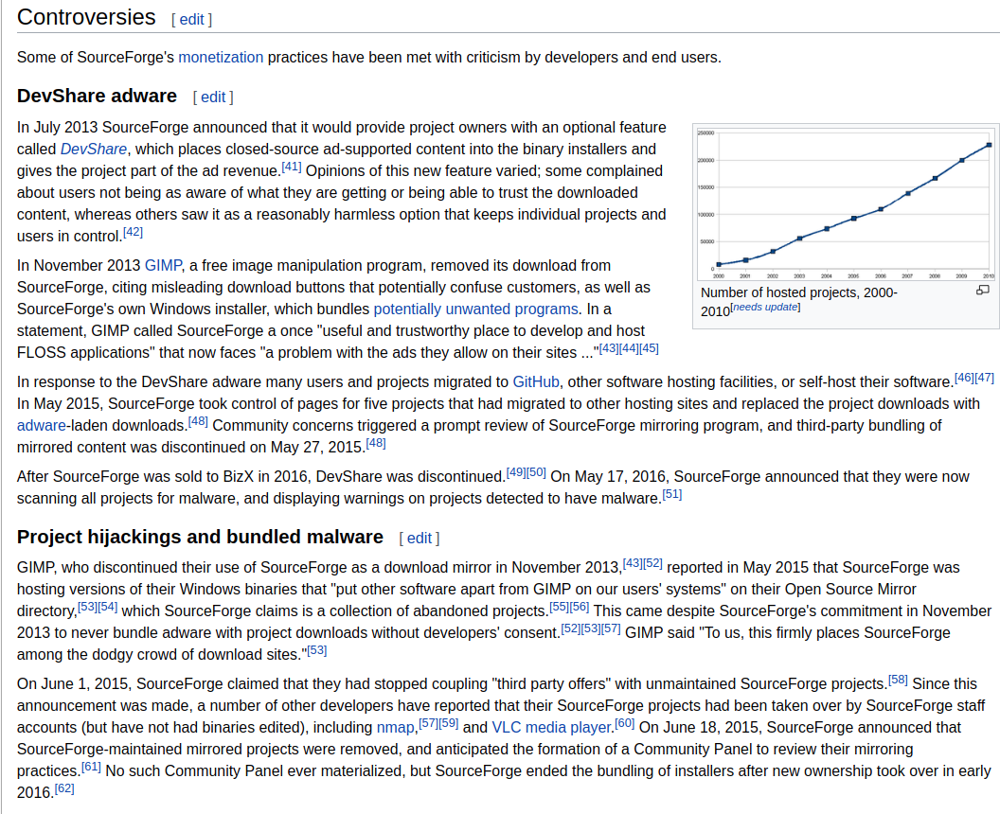

## Delivering Bad News #### *Helping your Community Through a Rough Patch* Rich Bowen Open Source Advocate AWS <img src="img/centos_logo_small.png"> --- ## Story time ... --- <img src="img/devshare_announce.png"> ---  --- ### I'll bet that's not the story you were expecting ... --- ### Ok, here's another story --- ## A date which will live ... <img src="img/infamy.png"> --- ## Disclaimer  Note: Reminder: Not here to defend or explain that decision Instead, I'll be talking about what you do after you make your community angry. 😡 'Cause you're gonna make your community angry, if, perhaps, not as spectacularly as I have. --- ## 1. Remember what hat you're wearing   The answer to this question should guide everything you say in public for or about your project. Note: * Are you the community representative? Are you just a company spokesperson? * I have to decide, daily, to be the voice of the community - even when I disagree with them, and even when it's going to piss off my coworkers. --- ## 2. Remember whose side you're on * Ideally, you are not confused about whose side you're on * ... also, if you see it as us vs them, then take a step back and a deep breath ... Note: * if anyone inside your organization starts to frame conversations as us vs them, you've got to address that first. * If the community is seen as the enemy, you have a much bigger problem. --- ## The Stages of Grief <img src="img/grief.jpg"> Note: Watching the conversation around CentOS Stream was fascinating, because it absolutely went through these phases. However, in any large distributed community, someone is always finding out about a thing for the first time today. --- ## Compassion * Don't get defensive * Be patient, and listen a lot. * Accept that they might not forgive you. Do your job anyway. --- ## Don't get defensive * As soon as you get defensive, it's a good sign that you have forgotten which hat you're wearing * Remember what hat you're wearing, and whose side you're on --- ## Listen Listen more than you talk Note: * You need to understand where your community is coming from * It will help you advocate better * It helps your company know what problems they're solving * As a community manager, trust is your most important asset --- ## Acknowledge Grievances We have a tendency to assume that "they" are wrong, and we just need to explain better. --- ## It's not personal It's kind of personal, though. Note: * Unless you are completely without compassion, it's going to feel personal. * That said, if you try to make it about yourself, that will absolutely backfire. --- ## Talking to the Press * Don't Note: * No, really, don't * Ask your PR person before talking to the press * Remember what hat you're wearing * Assume that everything you say will be twisted into a narrative that makes for a titillating headline. Try to imagine how it's going to get twisted. Most of the reporters we deal with are ethical and committed to truth. But it's hard to resist a good splashy headline, and it's hard to resist feeding a fire. Assume that every word you say will be a headline. --- ## Social Media * See above (talking to the Press) Note: * You believe that your personal and "role" twitter accounts are separate. You are mistaken * Your off-hand "joke" tweet is, in fact, an official position statement from your project, and will sound harsh, callous, dismissive, tone-deaf to someone. --- ### There is honor in the tweet not sent  Note: * As Socrates famously said: * You do not have to respond to every tweet. Especially when your best response is a cutting comeback. * Again: Remember whose side you are on --- Pro tip: You are always wearing all your hats.  Note: Dirty little secret about the "which hat?" question - The question is a lie. You don't get to change hats. Sorry. ---  Note: The wise Theo Schlossnagle also observes ... --- ## Always tell the truth  Note: * Note that this contradicts my above advice about the Press. Sometimes. Kinda. Except that it doesn't --- ## Truth * Your users/customers/audience are smarter than you are * As a community manager, trust is your most important asset Note: * If you bend the truth, even a little, they will call you on it, and explain in gruesome detail why you're wrong, and assume that you lied intentionally --- ## Truth * If you don't know something: * Say so * Go find out Note: You don't get to hide behind "I don't know" indefinitely, but if it's the truth, then say so. --- ## Insider info * If something is secret, say "I can't talk about that." * Don't throw your employer (or, in my case, your former employer!) under the bus.  Note: * Sometimes it's better not to say anything. Be discerning. * To throw someone under the bus is to criticize, blame, or punish them, especially in order to avoid blame or gain an advantage. --- ## Trust When you have broken trust (real, or perceived - doesn't matter) rebuilding that trust is your whole job. --- ## Don't make (or imply) empty promises * Be completely transparent about whether you can do anything about their complaints. * Do not promise changes, or even suggest that they are possible, if they are not. Note: In the case of CentOS Linux, CentOS Stream, Red Hat is not changing their mind. Pretending that they might is a HUGE disservice to the community. --- ## Don't get fired * Remember what hats you wear ... * ... and don't burn any of them * Wait before sending that email/tweet/whatever. Every time. * Being a community manager is always a balancing act between priorities and perspectives. --- ### finis * Q&A? rbowen@apache.org @rbowen <small>github.com/rbowen/presentations/bad_news</small>